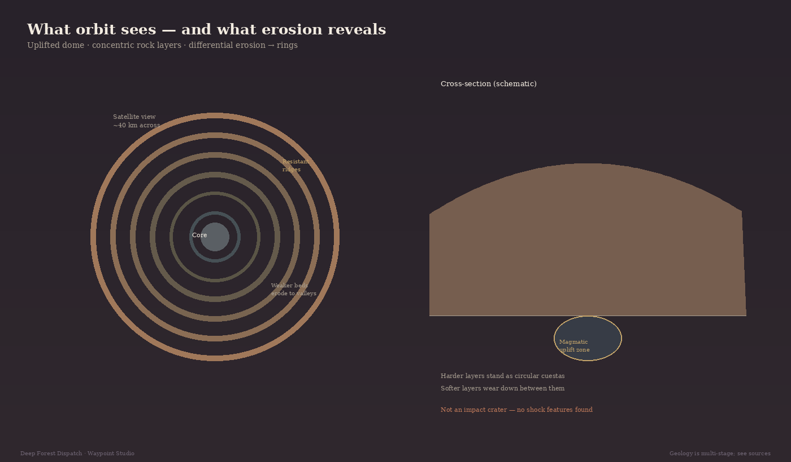

A perfect eye in the desert
About forty kilometers across, the Richat Structure sits in Mauritania’s Adrar desert as a set of nested rings. Astronauts noticed it early; the internet never forgot. Circles that large invite one story: a meteor.
Impact craters are real. This one fails the tests that matter on the ground.

Why impact fails
In 1969, Dietz, Fudali, and Cassidy examined Richat as a possible astrobleme. They found no shock features — no shocked quartz, no shatter cones, none of the petrographic fingerprints impact leaves behind. They dismissed a meteor origin. Later work has not revived it.
Looking circular from space is not enough. Plenty of endogenic structures wear rings after erosion.
Dome, layers, differential erosion
Current understanding treats Richat as a deeply eroded geologic dome — rock arched upward above intrusive and hydrothermal activity, then planed by weathering. Harder beds stand as circular ridges (cuestas); softer beds wear into the valleys between them. From above, that pattern reads as an eye.
Peer-reviewed work describes an alkaline–hydrothermal complex and related intrusion history. Recent dating studies argue for a polyphase igneous story separated by long intervals — more than a single neat event. The rings you see today are the eroded expression of that architecture, not a finished “solved volcano” cartoon.
What is clear — and what is still being refined
Clear: not an impact crater. Clear: concentric sedimentary layers exposed by uplift and differential erosion. Clear: igneous activity is part of the deep story.
Still refined: exact timing and sequence of every magmatic pulse. Science here is mature enough to reject the meteor myth and honest enough to keep the full chronology under active study.